Although controlling the speed of one motor can be useful, let’s move into more interesting territory by controlling two motors at once to affect their speed and direction. Our goal is to describe the construction of a tank-style robot that we’ll continue to work on in the next few chapters. Here we’ll describe the construction and basic control of our tank.
Our tank has two motors that each control one tread, allowing it to climb over small obstacles, rotate in one position, and not crash into obstacles as it travels. You will be able to control the speed and direction of travel, and you will also learn how to add parts for collision avoidance and remote control. Once you have completed the projects in this book, you will have a solid foundation for creating your own versions and bringing your ideas to life.
The Hardware
The following hardware is required:
- One Pololu RP5 Tank Chassis package
- One Pololu RP5 Chassis plate
- Six alkaline AA cells
- One 9 V battery to DC socket cable
- A DFRobot 2A Arduino Motor Shield
- Arduino and USB cable
The Chassis
The foundation of any robot is a solid chassis containing the motors, drive-train, and the power supply. An Arduino-powered robot also needs to have room to mount the Arduino and various external parts.
You can choose from many chassis models available on the market, but we’ll use a tank chassis—the Pololu RP5 series shown in Figure 12-10, which contains two motors.
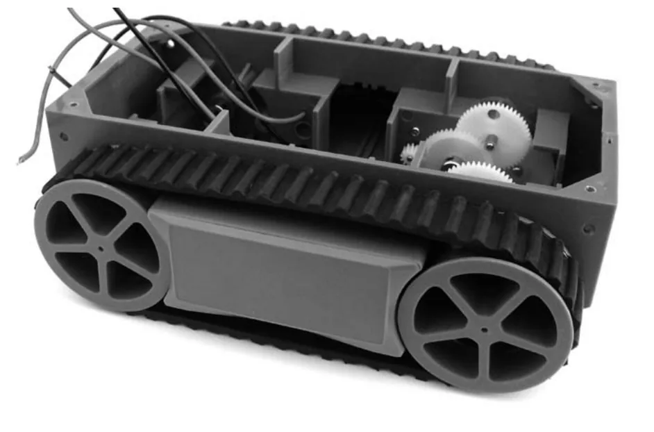
Two Power Supplies
The Pololu chassis includes a holder for six AA cells, which we’ll use as the power supply for the motors, as shown in Figure 12-11. The battery holder sits in the base of the chassis between the motors and gives the robot a low center of gravity.
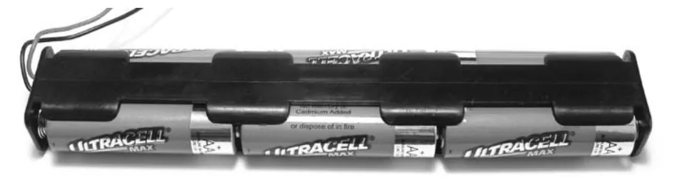
Although the power supply in Figure 12-11 is large, we need to use a separate power supply for our Arduino board, because this power will allow the sketch to keep operating even if the motors fail. The power for the Arduino in this project comes from a 9 V battery, which can be connected to the power socket of the Arduino board using the cable shown in Figure 12-12.
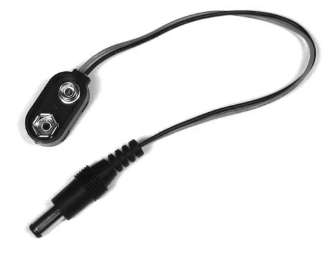
The Mounting Plate
The last part of our chassis is the mounting plate, which is shown in Figure 12-13.
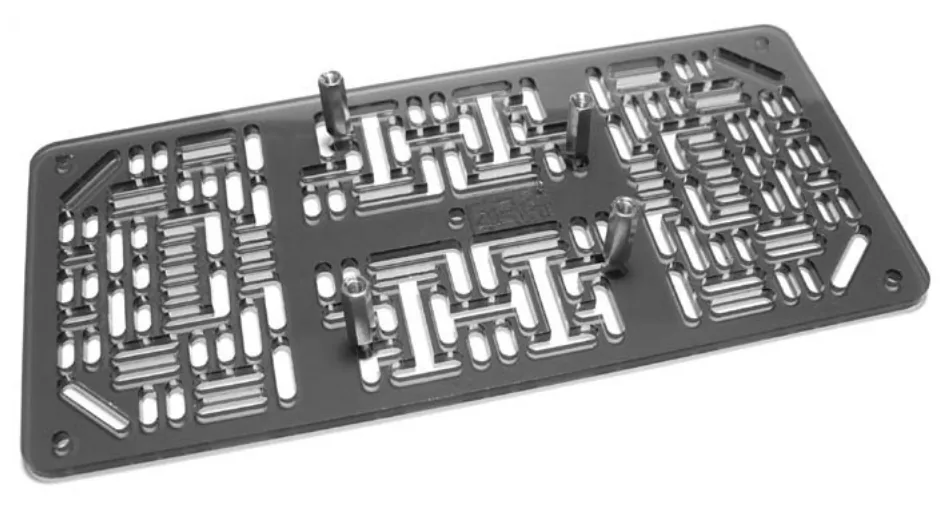
The mounting plate covers the top of the chassis and allows you to bolt items on top using spacers and matching M3 screws. (Screws, spacers, and washers should be available from a robotics parts supplier or a large hardware store.) In Figure 12-14, you can see the mounting plate’s spacers already fitted to hold our Arduino board.
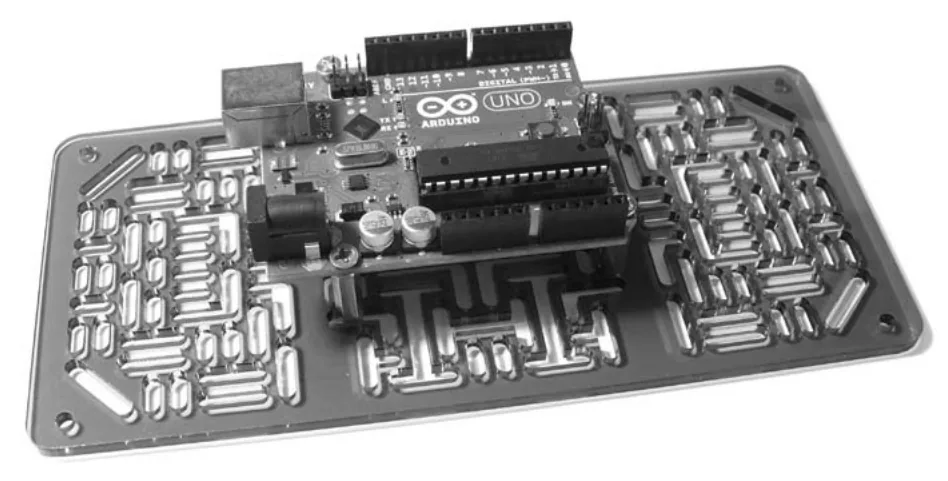
The Schematic
The final requirement is to create the circuitry to control the two motors in the chassis. Although we could use the circuitry shown in Figure 12-9 for each of the motors, this wouldn’t allow us to control the direction of the motor and could be somewhat inconvenient to wire up ourselves. Instead, we use a motor shield. A motor shield contains the circuitry we need to handle the higher current drawn by the motors and also accepts commands from the Arduino to control the speed and direction of both motors. For our tank, we’ll use a 2A Motor Shield for Arduino from DFRobot (http://www.dfrobot.com/), as shown in Figure 12-15.
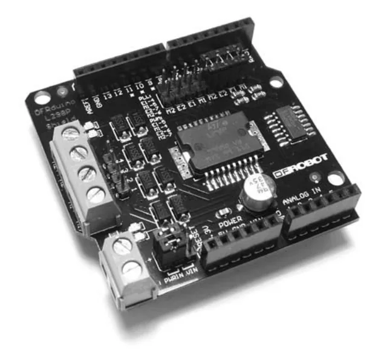
Connecting the Motor Shield
Making the required connections to the motor shield is simple: Connect the wires from the battery pack to the terminal block at the bottom-left of the shield, as shown in Figure 12-16. The black wire (negative) must be on the right side and the red wire on the left.
Next connect the two pairs of wires from the motors. Make sure the colors of the wires match the connections, as shown in Figure 12-17.
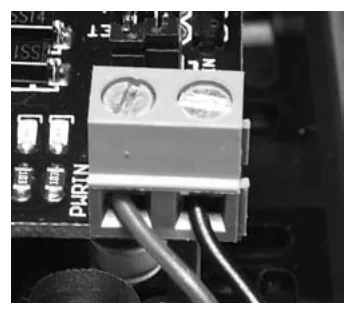
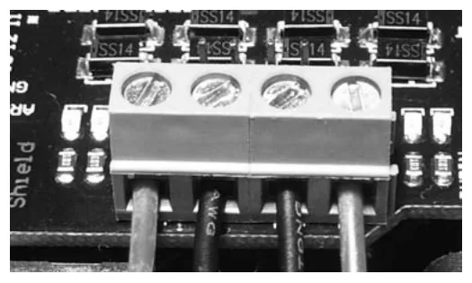
Connecting the Jumpers
The final task to set up the shield is to connect the appropriate jumpers. Look between the DC power connection and the bottom row of sockets on the shield, and you should see six pins with two black jumpers. Place them horizontally so that they cover the four pins on the left, as shown in Figure 12-18. Lastly, ensure that the four jumpers are connected vertically across the PWM jumpers, as shown in Figure 12-19.
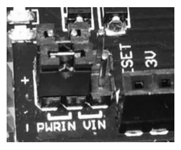
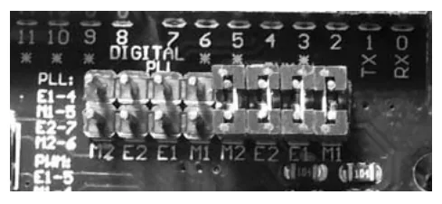
If your motor’s wires are not color-coded, you may have to swap them after the first run to determine which way is forward or backward.
After you’ve connected the wiring and jumpers, inserted the battery pack, fitted the Arduino and shield to the mounting plate, and fastened it to the chassis, your tank should look something like the one in Figure 12-20.
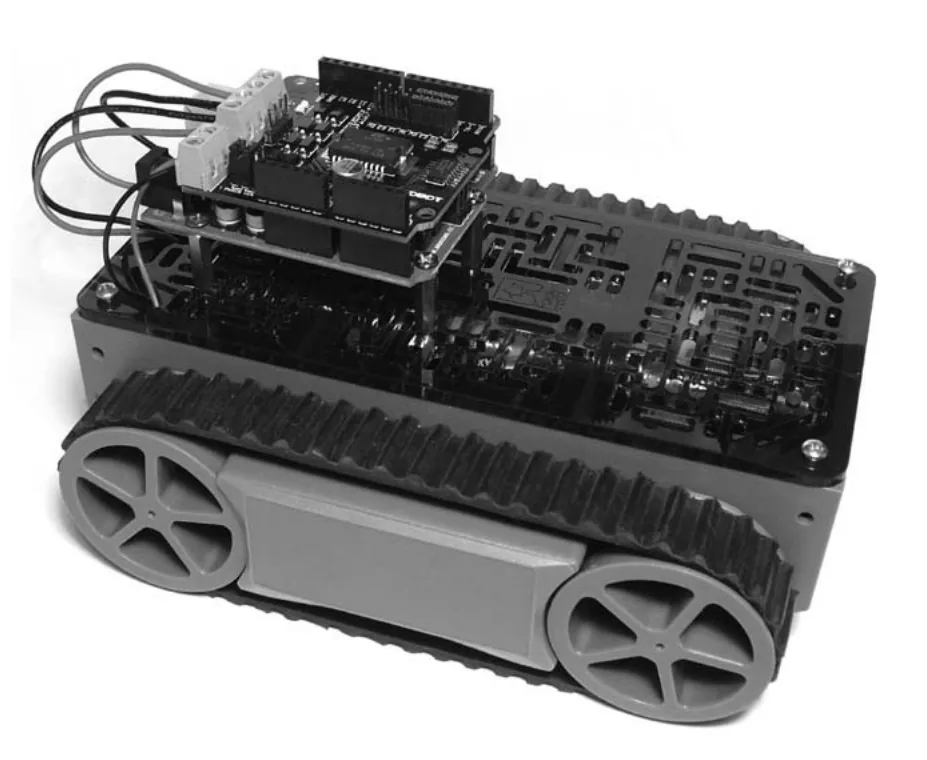
The Sketch
Now to get the tank moving. To begin, let’s create some functions to simplify the movements. Because two motors are involved, we’ll need four movements:
- Forward motion
- Reverse motion
- Rotate clockwise
- Rotate counterclockwise
Our motor shield controls each motor with two digital pins: One pin is for speed control using PWM (as demonstrated in Project 39), and the other determines the direction the motor will turn.
Four functions in our sketch match our four movements: goForward(), goBackward(), rotateLeft(), and rotateRight(). Each accepts a value in milli seconds, which is the length of time required to operate the movement, and a PWM speed value between 0 and 255. For example, to move forward for 2 seconds at full speed, we’d use goForward(2000,255).
Enter and save the following sketch (but don’t upload it just yet):
// Project 40 - Building and Controlling a Tank Robot
int m1speed=6; // digital pins for speed control
int m2speed=5;
int m1direction=7; // digital pins for direction control
int m2direction=4;
void setup()
{
pinMode(m1direction, OUTPUT);
pinMode(m2direction, OUTPUT);
delay(5000);
}
void goForward(int duration, int pwm)
{
❶ digitalWrite(m1direction,HIGH); // forward
digitalWrite(m2direction,HIGH); // forward
analogWrite(m1speed, pwm); // speed
analogWrite(m2speed, pwm);
delay(duration);
analogWrite(m1speed, 0); // speed
analogWrite(m2speed, 0);
}
void goBackward(int duration, int pwm)
{
digitalWrite(m1direction,LOW); // backward
❷ digitalWrite(m2direction,LOW); // backward
analogWrite(m1speed, pwm); // speed
analogWrite(m2speed, pwm);
delay(duration);
analogWrite(m1speed, 0); // speed
analogWrite(m2speed, 0);
}
void rotateRight(int duration, int pwm)
{
❸ digitalWrite(m1direction,HIGH); // forward
digitalWrite(m2direction,LOW); // backward
analogWrite(m1speed, pwm); // speed
analogWrite(m2speed, pwm);
delay(duration);
analogWrite(m1speed, 0); // speed
analogWrite(m2speed, 0);
}
void rotateLeft(int duration, int pwm)
{
❹ digitalWrite(m1direction,LOW); // backward
digitalWrite(m2direction,HIGH); // forward
analogWrite(m1speed, pwm); // speed
analogWrite(m2speed, pwm);
delay(duration);
analogWrite(m1speed, 0); // speed
analogWrite(m2speed, 0);
}
void loop()
{
goForward(1000, 255);
rotateLeft(1000, 255);
goForward(1000, 255);
rotateRight(1000, 255);
goForward(1000, 255);
goBackward(2000, 255);
delay(2000);
}In the sketch, we set the direction of travel for each motor using
digitalWrite(m1direction, direction );The value for direction is HIGH for forward or LOW for backward. There fore, to make the tank move forward, we set both motors the same way, which has been done at ❶ and ❷. Next we set the speed of the motor using the following:
analogWrite(m1speed, pwm );The value for pwm is the speed, between 0 and 255. To make the tank rotate left or right, the motors must be set in opposite directions, as shown at ❸ and ❹.
Upload the sketch, remove the USB cable, and connect the battery cable to the Arduino power socket. Then place the tank on carpet or a clean surface, and let it drive about. Experiment with the movement functions in Project 40 to control your tank; this will help you become familiar with the time delays and how they relate to distance traveled.